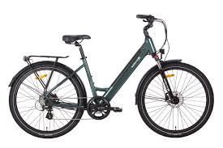
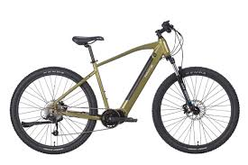

VelectriX
"Go far, ride easy with Australia's best eBike."
About VelectriX
VelectriX is an Australian company specializing in high-performance electric bikes, making eco-friendly commuting and off-road adventures more accessible.
Our Services
- Electric Bike Manufacturing
- Urban Commuter E-Bikes
- Off-Road & Mountain E-Bikes
- Battery & Performance Solutions
Featured Products
-

VelectriX Urban+ A stylish city commuter e-bike designed for efficiency.
Features: Lightweight aluminum frame, Powerful mid-drive motor, Long-lasting lithium-ion battery, Adjustable suspension.
-

VelectriX Ascent A powerful off-road e-mountain bike for adventure seekers.
Features: High-torque motor, Durable and lightweight frame, Large-capacity battery, Hydraulic disc brakes, Multiple riding modes.
Why Choose VelectriX?
VelectriX offers premium electric bikes with innovative design, advanced battery technology, and exceptional durability for all types of riders.
Contact Information
Email: support@velectrix.com.au
Website: www.velectrix.com.au
Phone: +61 7 3063 3230
Back to Companies